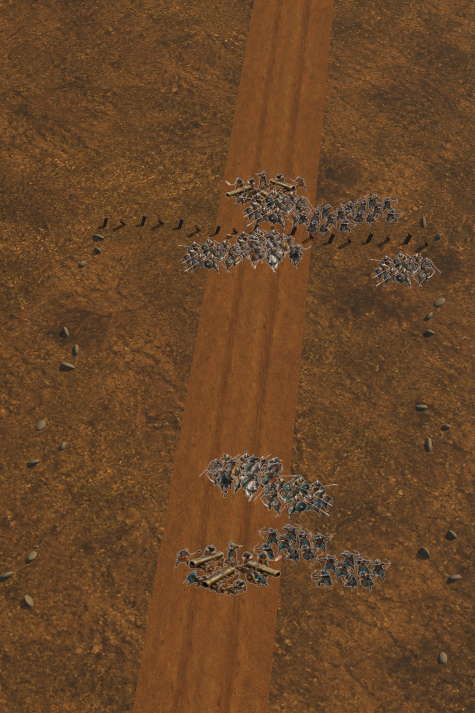

01 · DOĞRUDAN TAKTİK KONTROL
Mangayı seç, düşmanı hedefle, mevziyi değiştir.
Piyade, okçu, süvari ve Şahi topu mangaları sol–merkez–sağ emirlerini uygular; seçilen düşman birlik türüne odaklanır ve gerektiğinde taktik olarak geri çekilir.